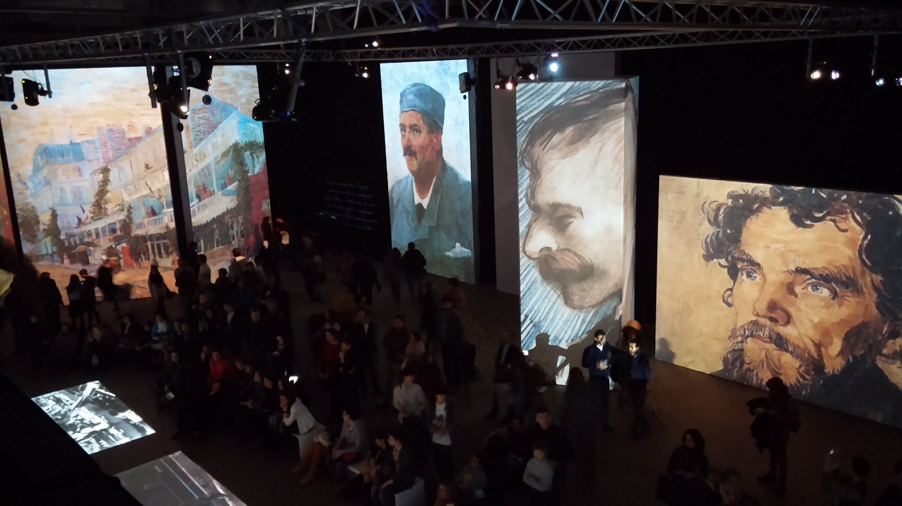
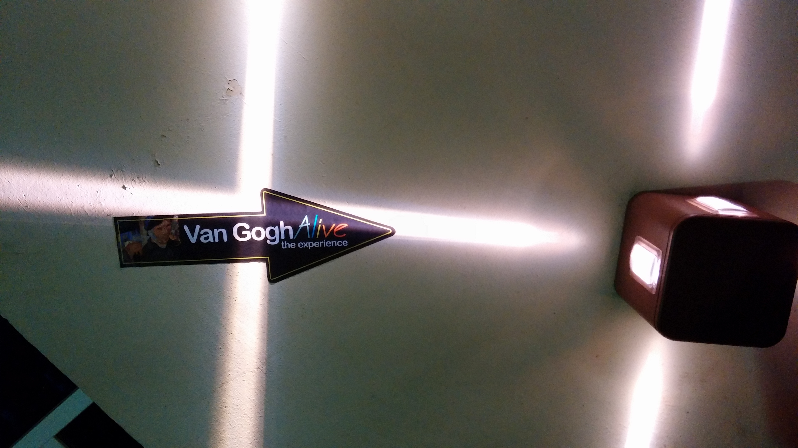
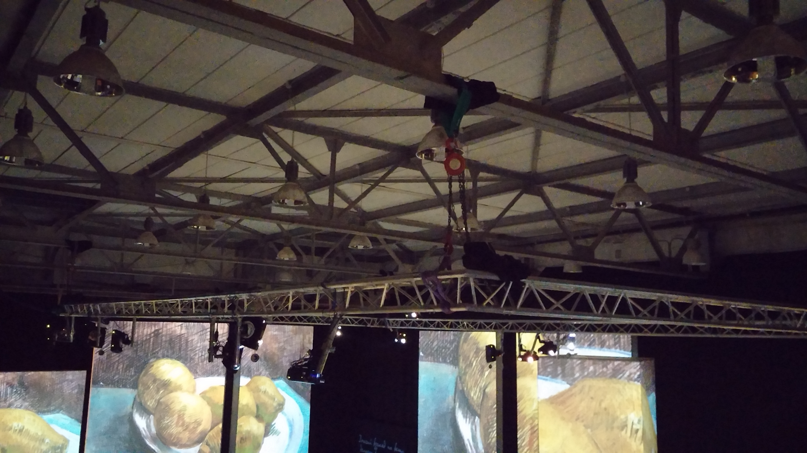
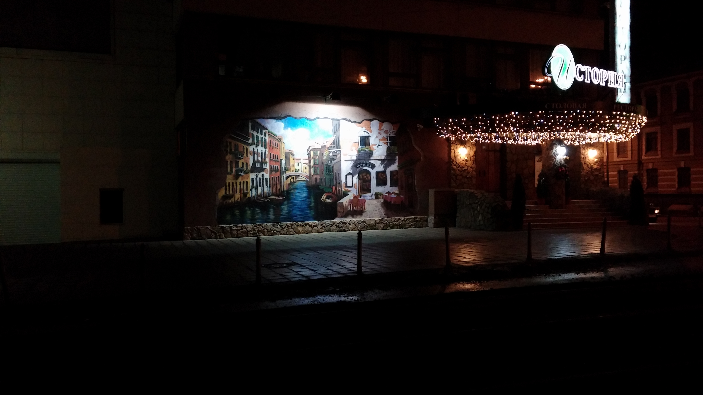
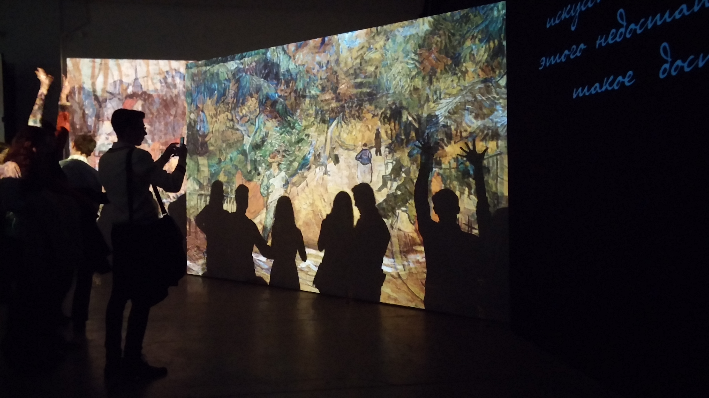

Van Gogh Alive Posted:
{kind=link}
{kind=link}
Exhibition «Van Gogh Alive» is held in Design Center Artplay. Exhibition was created by Australian company Grande Exhibitions.
The entirely multimedia exhibition allows spectator to feel himself inside Van Goghs canvases. This feeling is achieve by quite big screens placed on the walls floor and columns. Dynamic images change with classic music. Everything would be alright but the organizers had not paid enough attention to the quality of the images, their resolution to be exact. Pixels were clearly visible, it wasn't pleasing for the eyes. Quite inaccurate installation of the projector gave ragged pixel edge on one of the central screens in the first hall.
For those who were particularly impressed with the exhibition there was a place to work with some easels and pencils.
    {kind=link}
{kind=link}
{kind=link}
{kind=link}
{kind=link}
В центре дизайна Artplay проходит выставка «Van Gogh Alive». Выставка была подготовленна австралийской компанией Grande Exhibitions.
Полностью мультимедийная выставка дает возможность зрителю почувствовать себя внутри «оживших» полотен Ван Гога. Это ощущение достигается благодаря весьма большим экранам, размещенных на стенах, полу и колоннах. Динамические изображения сменяются под произведения классической музыки. И всё было бы великолепно, если бы организаторы уделили должное внимание качеству демонстируемых изображений, а именно их разрешению. Были отчетливо видны пиксели, которые никак не радовали взгляд. Также некоторая неточность в установке проектора дала пиксельную «ёлку» по краю одного из центральных экранов первого зала.
Для особо впечатлившихся выставкой было отведено место для творчества: несколько мольбертиков и карандаши.